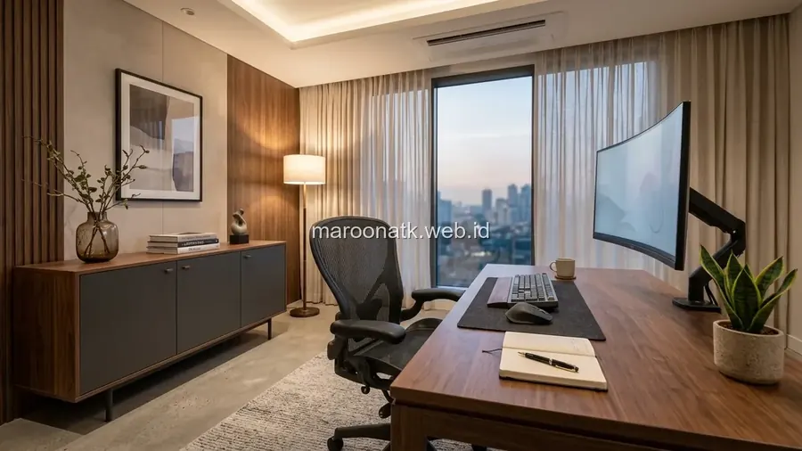

Mengenal Prinsip Penataan Furniture Kantor Berbasis Feng Shui
Jawaban singkat: cara menata furniture kantor berdasarkan prinsip Feng Shui dapat mempertimbangkan orientasi meja kerja, posisi terhadap pintu masuk, kelancaran sirkulasi ruang, keseimbangan penempatan lemari penyimpanan, dan kenyamanan visual pengguna. Namun, untuk lingkungan kerja profesional, prinsip penataan ruang tersebut sebaiknya dipadukan secara proporsional dengan standar ergonomi, kualitas pencahayaan, sirkulasi udara, dan kebutuhan operasional kantor sehari-hari.
Penataan ruang kerja di gedung perkantoran modern tidak hanya berbicara mengenai estetika interior atau efisiensi luas lantai per meter persegi. Berbagai manajer operasional dan tim General Affairs kerap mendapati keluhan karyawan terkait rasa kurang nyaman saat bekerja: mulai dari rasa gelisah karena posisi duduk membelakangi pintu koridor, tubuh menggigil akibat meja berada tepat di bawah hembusan pendingin udara (AC), hingga rasa sesak akibat penumpukan lemari arsip yang mempersempit jalur jalan.
Di sinilah konsep tradisional Feng Shui kerap dijadikan salah satu sudut pandang dalam merancang tata letak (layout) ruang kerja. Penting untuk dipahami bahwa prinsip penataan ruang dapat menjadi salah satu pertimbangan dalam menciptakan lingkungan kerja yang terasa lebih nyaman, tetapi efek terhadap fokus tidak hanya ditentukan oleh Feng Shui, melainkan oleh kombinasi antara ergonomi, kualitas akustik, suhu ruangan, serta organisasi furniture yang rapi.

Rekomendasi Kursi Kantor Ergonomis untuk Menjaga Kesehatan Postur Kerja
Kriteria pemilihan lumbar support, mekanisme tilting, dan material mesh untuk durasi kerja panjang.
1. Posisi Meja Kerja Terhadap Pintu Masuk (Commanding Position)
Dalam terminologi Feng Shui, konsep paling mendasar adalah Commanding Position (posisi komando). Posisi ini menempatkan meja kerja sedemikian rupa sehingga pengguna dapat melihat pintu masuk ruangan secara leluasa, namun tidak berada tepat segaris lurus dengan bukaan pintu.
Secara psikologis dan ergonomi tata ruang, konsep ini memiliki penjelasan yang sangat masuk akal:
- Menghilangkan Efek Kejut: Karyawan yang duduk membelakangi pintu sering kali merasa waswas karena tidak dapat mengantisipasi rekan kerja atau tamu yang tiba-tiba melangkah masuk ke ruangan.
- Dinding Penopang di Belakang: Memiliki partisi atau dinding solid di belakang punggung memberikan rasa aman dan privasi visual saat membuka dokumen penting di layar monitor.
- Pemandangan Ruang Terbuka: Menghadap ke arah ruangan yang lebih luas memberikan persepsi visual yang lebih lapang, sehingga membantu mengurangi rasa penat pada mata saat jeda berpikir.
2. Posisi Meja Terhadap Pendingin Udara (AC) dan Sirkulasi Udara
Salah satu kesalahan paling sering dalam tata letak kantor adalah menempatkan workstation tepat di bawah kisi-kisi hembusan unit AC split atau diffuser central. Meskipun suhu ruangan perlu dijaga sejuk, terpaan angin dingin secara langsung ke leher atau punggung dalam durasi 8 jam per hari dapat menimbulkan kekakuan otot, migrain, dan hilangnya konsentrasi.
Dalam prinsip Feng Shui, hembusan angin kencang langsung ke tubuh dianggap memecah aliran energi yang tenang. Dari kacamata kesehatan kerja, penyesuaian posisi meja dengan jarak minimal 1,5 hingga 2 meter dari titik hembus langsung AC, atau pemasangan deflector AC, terbukti efektif menjaga kenyamanan termal pekerja.

Penataan workstation dengan pencahayaan seimbang dan jarak sirkulasi yang cukup mendukung fokus kerja harian.

Panduan Teknis Memilih Material Furniture Kantor Berkualitas
Komparasi keawetan rangka baja, panel HPL, solid wood, dan sistem pelapisan powder coating.
Perbedaan Prinsip Feng Shui dengan Ergonomi Kerja
Saat merencanakan pengadaan dan layout kantor, tim procurement perlu memahami irisan serta batasan antara Feng Shui dan ergonomi agar keputusan penataan tetap objektif dan terukur:
| Parameter Penataan | Perspektif Feng Shui | Perspektif Ergonomi & OHS |
|---|---|---|
| Orientasi Meja | Menghadap pintu masuk (Commanding Position) untuk menyambut peluang | Memaksimalkan sudut pandang dan meminimalkan silau pantulan cahaya (glare) di layar |
| Kursi Kerja | Memiliki sandaran kokoh yang melambangkan dukungan stabilitas karier | Memiliki lumbar support, armrest adjustable, dan mekanisme gaslift penopang tulang belakang |
| Kerapian & Storage | Mencegah clutter (kekacauan) agar energi Chi dapat mengalir lancar | Mencegah risiko tersandung dan mempercepat waktu pencarian berkas fisik |
| Pencahayaan | Menyeimbangkan energi Yin (teduh) dan Yang (terang) | Standar pencahayaan 300–500 Lux untuk mencegah ketegangan otot mata (eye strain) |
Checklist Praktis Menata Furniture Kantor yang Fungsional
Berikut panduan langkah demi langkah yang dapat diterapkan saat menata ulang ruang kerja kantor:
- Hitung Lebar Koridor Sirkulasi: Pastikan jarak lorong utama antar workstation minimal 90–120 cm agar dua orang dapat berpapasan dengan leluasa tanpa menyenggol meja.
- Atur Manajemen Kabel (Wire Management): Gunakan grommet meja dan spine tray di bawah meja agar kabel daya dan LAN tidak berserakan di lantai.
- Kelompokkan Area Penyimpanan: Posisikan lemari arsip atau credenza di dekat dinding samping atau sudut ruangan yang mudah dijangkau seluruh anggota divisi.
- Integrasikan Elemen Hijau: Menempatkan tanaman indoor berdaun bulat (seperti Zamioculcas atau Sansevieria) memberikan kesegaran visual dan menyaring partikel udara dalam ruangan.
- Sediakan Area Kolaborasi Terpisah: Pisahkan zona kerja fokus individual dari area diskusi intensif untuk meredam kebisingan suara.

SOP Pengadaan Furniture Kantor B2B untuk Divisi Procurement
Tahapan survei tata ruang, verifikasi SPH vendor, hingga prosedur serah terima BAST.
Pertanyaan Umum (FAQ) Penataan Furniture Kantor
Posisi meja kantor yang nyaman adalah menghadap ke arah pintu masuk tanpa berada tepat segaris dengan bukaan pintu (commanding position), didukung dinding solid di belakang kursi, serta memiliki jarak pandang terbuka dan pencahayaan yang merata.
Secara psikologis dan tata ruang, duduk membelakangi pintu sering menimbulkan rasa waswas karena pengguna tidak dapat melihat siapa yang masuk ke ruangan. Jika keterbatasan ruang mengharuskan posisi tersebut, cermin kecil atau partisi pembatas dapat digunakan untuk memantau area pintu.
Tidak. Feng Shui adalah seni penataan spasial tradisional yang berfokus pada aliran energi (Chi) dan keseimbangan elemen visual. Sementara itu, ergonomi adalah disiplin ilmiah yang mengkaji kesesuaian fisik antara postur tubuh pekerja, dimensi furniture, sudut monitor, dan kenyamanan biomekanik.
Paparan hembusan udara dingin AC secara langsung ke kepala atau leher dapat menyebabkan ketegangan otot, sakit kepala, kulit kering, dan hilangnya fokus kerja. Penataan furniture perlu memastikan jarak aman dari titik distribusi AC.
Gunakan furniture multifungsi dengan profil ramping, manfaatkan penyimpanan vertikal seperti credenza atau lemari arsip geser, hindari blocking jalur sirkulasi utama, dan maksimalkan pencahayaan alami agar ruangan terasa lebih lapang.

Arby Ardiansyah
Arby Ardiansyah merupakan praktisi dan penulis konten MAROON ATK yang membahas tata kelola ruang kerja, pengadaan furniture kantor, efisiensi perlengkapan B2B, dan solusi sarana workstation di Indonesia.